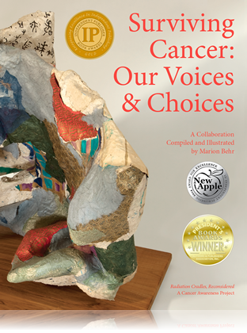

Preface
“You have cancer,” I heard the doctor say,
and a numbing sensation seeped through my entire being. Next I felt a barrage of emotional jolts: fear for the future, dread of a disease I could not comprehend and anger because something was growing inside of me that had no right to be there. Would it destroy me? All these feelings were followed by a very basic animal instinct: I was determined to survive, but how? I didn’t know where to begin. What kind of hurry was I in? How much time would it take to find a solution? Where could I find the necessary doctors? The questions seemed endless. The internet provided many facts, as did other sources, but how could I discover the right path to follow to get well?
Despite the joint efforts of my family, gathering information took time. Some issues remained confusing or unresolved. While speaking with other cancer patients, who all had unique personalities and a vast variety of needs, it became evident that many of us felt overwhelmed.
Surviving Cancer: Our Voices and Choices is a source book, written in part by cancer survivors of different ages who provide insight into personal experiences and choices to ease the way for new cancer patients. Dr. Kathleen Toomey presents the concept of a “cancer team” and other doctors and healthcare professionals share pertinent information in their areas of expertise. The doctors’ articles are arranged to correspond with the usual order of visits experienced by most cancer patients. The medical articles are interspersed with personal narrations by cancer survivors, which often relate to the issues discussed in the doctors’ articles.
Cancer organization leaders describe how their groups are beneficial to cancer patients. These articles follow narrations by survivors who were helped by their programs. Different cancer organizations suit different personalities. A Nobel Prize recipient, recognized for his work in cancer research, introduces us to some of his ideas. There are also insights concerning clinical trials, care giving, financial assistance and poetry relating to a cancer experience.
Requests for articles were sent to highly recommended individuals and nearly everyone responded positively. In this age of cynicism, it is gratifying to interact with the remarkable people who have made this book possible. The articles are written by authors in the United States, Canada, Cambodia and Israel. Most of the authors have never met in person but some have been exchanging ideas over the Internet for the past three years, since the conception of this book. This collaboration is truly a product of the miracle of modern communication.
Each author presents a personal point of view. Occasionally opinions differ, but that should help the reader discover what questions to ask and in which direction to go. However, patients should always consult their own doctor or doctors for their most current recommendations.
Besides providing information, Surviving Cancer encourages early detection. While reading the survivors’ stories, it becomes apparent that early detection makes a difference—when cancer is found at an early stage, a greater percentage of patients are cured.
Through the process of compiling this book, I could not help but notice how overcoming cancer has given many survivors a mission to do something to help others, whether it takes the shape of creating an organization, speaking to groups of patients, writing a narration, making sculptures to encourage early detection or collaborating to create a book.
All of the contributors hope that those who read this book will benefit from our joint effort.